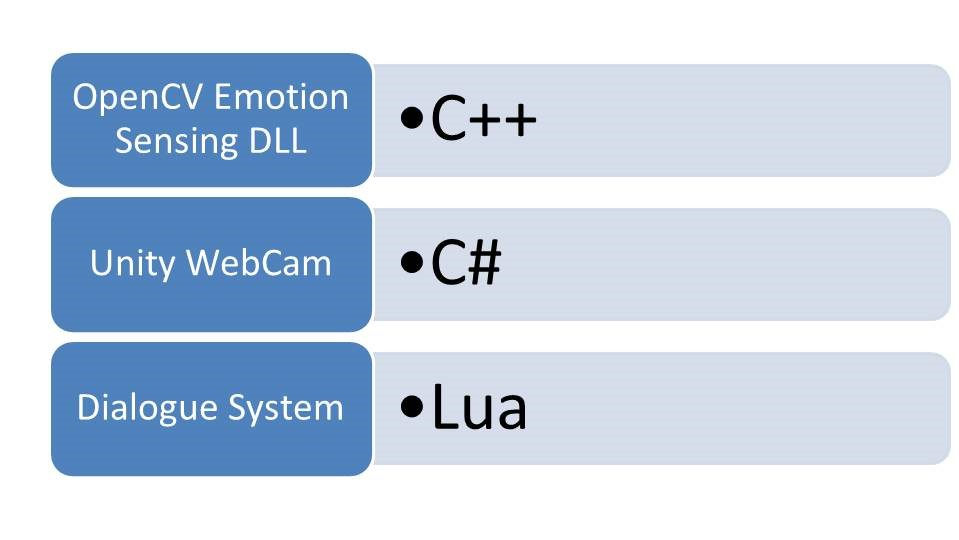
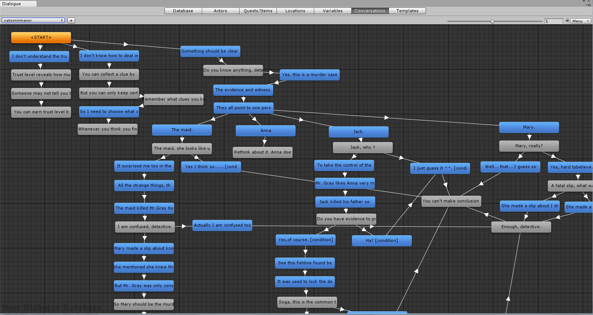

侦探诺克
这是一款3D解谜游戏。同时也实现运用动态情感捕捉技术，该技术目前尚未有大型游戏实现。
目标:
玩法:
- 在庄园中寻找线索物品。
- 与NPC交谈并完成任务以获得信任值，信任值会影响NPC的对话内容。低信任值的NPC也许会说谎！
- 基于完成度的多结局设定。
设计理念:
- 诺克取名于英文Nozick，一位20世纪美国哲学家。他提出人们以为的现实可能只是由其他人向人们大脑输送的一系列感官信号组成。其实侦探寻求事实也是如此，你永远不知道你找到的是真的真相还是凶手布局引诱你以为的真相。
- 信任值是大部分游戏容易忽视却很重要的一个要素，随着游戏进展NPC对玩家这个侦探逐渐信任，而潜在凶手对玩家戒心越来越大，是符合实际的设定。
技术亮点:
-
实时情感检测：利用表情数据库训练情感检测函数API。利用动态链接库(DLL)将API导入Unity 3D 项目。
在游戏中利用相机捕捉玩家面部图片，利用情感检测API实时检测玩家情感。
如果检测到困惑的表情，则在游戏中给予适当提示。
API 接入点:
double MYFACEDETECT_FUNCTION_API facedetect(unsigned char x[], int length, int row, int col, int facearr[4])
[DllImport("opencvprojdll2", EntryPoint = "facedetect")]

-
基于Unity Dialogue System 的对话系统。取决于信任度和已收集的线索，大部分对话都有多个分支。
